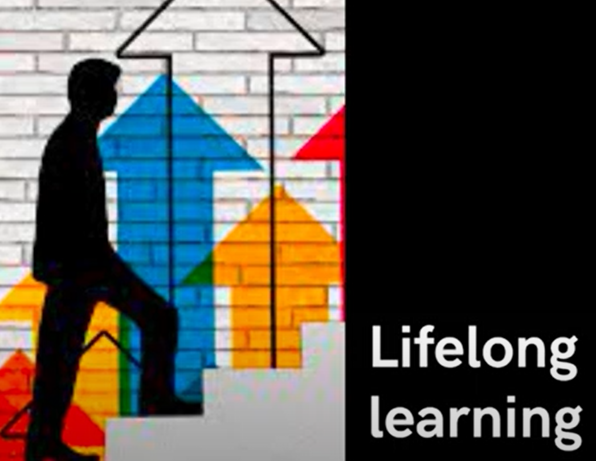
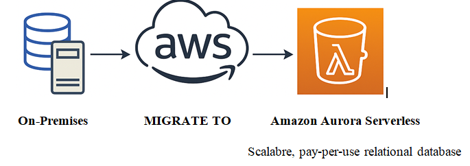

Lifelong Learning: uma jornada de
aprendizado contínuo
Plataformas modernas oferecem
Bootcamps
totalmente gratuitos graças a empresas renomadas.

Este material apresenta os princípios do Lifelong Learning e como construir uma rotina de aprendizado contínuo. Também explica o papel dos Bootcamps no desenvolvimento de habilidades práticas valorizadas pelo mercado atual.
Aprender continuamente deixou de ser um diferencial e tornou-se uma necessidade real. A tecnologia avança rapidamente, e somente quem se atualiza permanece relevante. Aqui você encontrará orientações para evoluir profissionalmente de forma estruturada.
O que é?
Lifelong Learning é a prática de estudar continuamente ao longo da vida. Envolve disciplina,
curiosidade e adaptação constante às mudanças do mundo moderno.
Importância na Carreira
Profissionais que aprendem sempre ampliam oportunidades, mantêm-se relevantes e
conquistam qualificações que o mercado exige.
Eu preciso estudar - AWS! Minha meta.

Bootcamps são programas intensivos focados em desenvolver habilidades técnicas em pouco tempo. São práticos, gratuitos e apoiados por grandes empresas.
Acesse e Inscreva-se:
Acessar - Bootcamp Bradesco Java & QA DeveloperEles são ideais para quem deseja iniciar na área de tecnologia, migrar de carreira ou reforçar competências específicas.
O aprendizado contínuo é uma das competências mais valiosas do presente. Avançar no seu próprio ritmo, com constância e determinação,
permite que o crescimento pessoal e profissional aconteça de forma natural e consistente. Cada passo, por menor que pareça, contribui para uma trajetória sólida de evolução.
Agradeço pela leitura e pela disposição em refletir sobre a importância de estar sempre atualizado(a). Vivemos em um cenário altamente competitivo,
e compreender os impactos da Inteligência Artificial e de outras áreas da Tecnologia da Informação é um ponto de partida significativo para quem deseja se preparar para o futuro.
Continue aprendendo, explorando e se desenvolvendo. O caminho do conhecimento é contínuo — e cada escolha em direção a ele já representa um avanço importante. 🌿
Fonte:
Mariane Neiva (Estruturando o seu Portfólio para Decolar a sua Carreira!)
Dio Campus Expert 14 - (DIO)
© 2025 — Desenvolvido por Belisnalva Costa